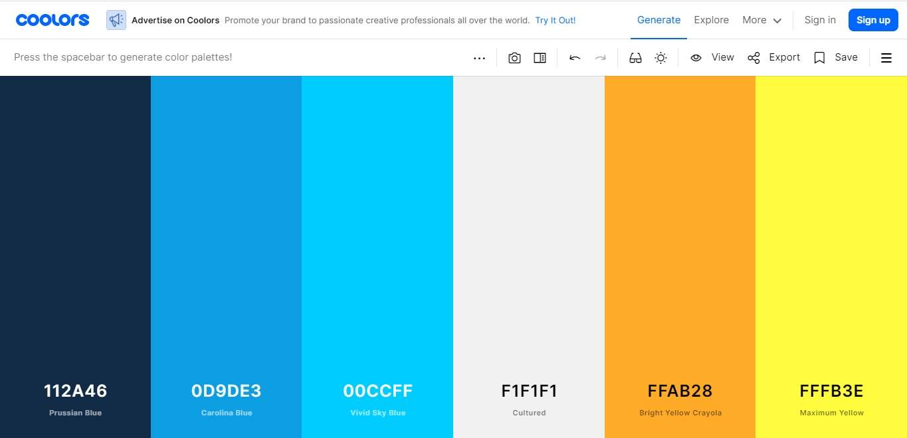

Color Scheme
I got my color palette from coolors.co

I was using a contract checker and I noticed that #112A46 as a parapgraph color makes a great contrast.
I got my color palette from coolors.co
I was using a contract checker and I noticed that #112A46 as a parapgraph color makes a great contrast.